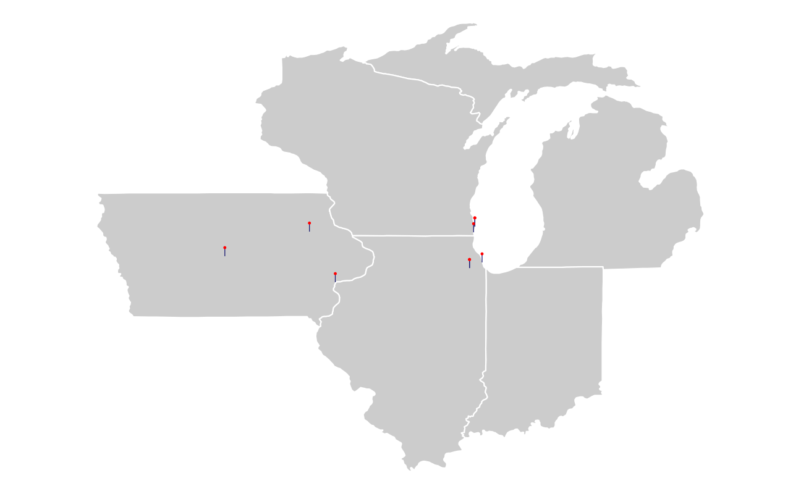

Last updated: 2021-09-29
Checks: 7 0
Knit directory: myTidyTuesday/
This reproducible R Markdown analysis was created with workflowr (version 1.6.2). The Checks tab describes the reproducibility checks that were applied when the results were created. The Past versions tab lists the development history.
Great! Since the R Markdown file has been committed to the Git repository, you know the exact version of the code that produced these results.
Great job! The global environment was empty. Objects defined in the global environment can affect the analysis in your R Markdown file in unknown ways. For reproduciblity it’s best to always run the code in an empty environment.
The command set.seed(20210907) was run prior to running the code in the R Markdown file. Setting a seed ensures that any results that rely on randomness, e.g. subsampling or permutations, are reproducible.
Great job! Recording the operating system, R version, and package versions is critical for reproducibility.
Nice! There were no cached chunks for this analysis, so you can be confident that you successfully produced the results during this run.
Great job! Using relative paths to the files within your workflowr project makes it easier to run your code on other machines.
Great! You are using Git for version control. Tracking code development and connecting the code version to the results is critical for reproducibility.
The results in this page were generated with repository version 5a1c95e. See the Past versions tab to see a history of the changes made to the R Markdown and HTML files.
Note that you need to be careful to ensure that all relevant files for the analysis have been committed to Git prior to generating the results (you can use wflow_publish or wflow_git_commit). workflowr only checks the R Markdown file, but you know if there are other scripts or data files that it depends on. Below is the status of the Git repository when the results were generated:
Ignored files:
Ignored: .Rhistory
Ignored: .Rproj.user/
Ignored: catboost_info/
Ignored: data/2021-09-08/
Ignored: data/CNHI_Excel_Chart.xlsx
Ignored: data/CommunityTreemap.jpeg
Ignored: data/Community_Roles.jpeg
Ignored: data/YammerDigitalDataScienceMembership.xlsx
Ignored: data/acs_poverty.rds
Ignored: data/fmhpi.rds
Ignored: data/grainstocks.rds
Ignored: data/hike_data.rds
Ignored: data/us_states.rds
Ignored: data/us_states_hexgrid.geojson
Ignored: data/weatherstats_toronto_daily.csv
Untracked files:
Untracked: code/YammerReach.R
Untracked: code/work list batch targets.R
Unstaged changes:
Modified: code/_common.R
Note that any generated files, e.g. HTML, png, CSS, etc., are not included in this status report because it is ok for generated content to have uncommitted changes.
These are the previous versions of the repository in which changes were made to the R Markdown (analysis/2021_03_07_geographic_animated_introduction.Rmd) and HTML (docs/2021_03_07_geographic_animated_introduction.html) files. If you’ve configured a remote Git repository (see ?wflow_git_remote), click on the hyperlinks in the table below to view the files as they were in that past version.
| File | Version | Author | Date | Message |
|---|---|---|---|---|
| Rmd | 5a1c95e | opus1993 | 2021-09-29 | remove assets folder content with animation |
| html | b352852 | opus1993 | 2021-09-29 | Build site. |
| Rmd | f6cba8e | opus1993 | 2021-09-29 | remove assets folder content |
suppressPackageStartupMessages({
library(tidyverse)
library(hrbrthemes)
library(gganimate)
library(ggtext)
library(glue)
})
source(here::here("code","_common.R"),
verbose = FALSE,
local = knitr::knit_global())
ggplot2::theme_set(theme_jim(base_size = 12))I was inspired by Sharon Pileggi’s Rladies introdution, where she prepared a gif to introduce herself on Twitter for her week as host of the handle, as described at this post. I will follow a similar workflow, but for my own history and with my own choices of font and theme.
us_states <- ggplot2::map_data("state") %>%
filter(region %in% c(
"iowa", "wisconsin", "illinois",
"indiana", "michigan"
))
residences <- tribble(
~city, ~state, ~long, ~lat, ~years, ~description,
"Lamont", "IA", -91.6476, 42.59999, 18, "Childhood",
"Ames", "IA", -93.62018, 42.026802, 4, "Engineering Undergrad",
"Muscatine", "IA", -91.04485, 41.42045, 2, "HON Chairs",
"Racine", "WI", -87.791916, 42.72062, 5, "Case Corporation<br>Magnum Engineering",
"Kenosha", "WI", -87.821185, 42.5847425, 2, "UW Parkside MBA",
"Racine", "WI", -87.791916, 42.72062, 6, "CNH Industrial<br>Strategic Sourcing",
"Burr Ridge", "IL", -87.9155, 41.74993, 8, "CNH Industrial<br>4WD Tractor",
"Chicago", "IL", -87.623177, 41.881832, 1, "Notre Dame Mendoza",
"Burr Ridge", "IL", -87.9155, 41.74993, 3, "CNH Industrial<br>Digital Operations",
)Let’s create a transition state for gganimate (city_order) as well as indicate connections between residences for the arrows.
residence_connections_prelim <- residences %>%
mutate(
# need this to create transition state ----
city_order = row_number() + 1,
# where I moved to next, for curved arrows ----
lat_next = lead(lat),
long_next = lead(long),
# label to show in plot, styled using ggtext ---
label = glue::glue("**{city}, {state}** ({years} yrs)<br>*{description}*"),
# label of next location ----
label_next = lead(label)
)Let’s modify this data a bit so that the first residence shows the label at the residence with no arrow and all remaining residences show an arrow with the label positioned at the next residence.
residence_connections <- residence_connections_prelim %>%
# get first row of residence ----
slice(1) %>%
# manually modify for plotting ----
mutate(
city_order = 1,
label_next = label,
lat_next = lat,
long_next = long,
) %>%
# combine with all other residences ----
bind_rows(residence_connections_prelim) %>%
# last (9th) row irrelevant ----
slice(1:9) %>%
# keep what we neeed ----
dplyr::select(city_order, lat, long, lat_next, long_next, label_next)
residence_connectionsThe static base map is drawn in light gray with white state borders. Each marker is a line segment plus a point in a sort of lollipop.
base_map <- ggplot() +
geom_polygon(
data = us_states,
aes(
x = long,
y = lat,
group = group
),
fill = "gray80",
color = "white"
) +
geom_segment(
data = residences,
aes(
x = long,
xend = long,
y = lat,
yend = lat + 0.2
),
color = "midnightblue",
size = 0.3
) +
geom_point(
data = residences,
aes(
x = long,
y = lat + 0.2
),
size = 0.5,
color = "red"
) +
# coord_map() +
coord_fixed() +
# coord_sf(label_axes = "----") +
theme(panel.grid.major = element_blank()) +
labs(x = NULL, y = NULL) +
theme_void()
base_map
The two layers of plot elements in the animation draw richtext labels and curved arrows in sequence.
anim <- base_map +
# add in labels for pins, with inward positioning ----
# show labels either top left or top right of pin ----
geom_richtext(
data = residence_connections,
aes(
x = ifelse(long_next < -92, long_next + 1,
long_next - 1
),
y = ifelse(lat_next < 42, lat_next - 1.5,
lat_next + 3
),
label = label_next,
vjust = "top",
hjust = ifelse(long_next < -92, 0, 1),
# group is used to create the transition ----
group = seq_along(city_order)
),
size = 2,
label.colour = "white",
color = "midnightblue",
) +
# show arrows connecting residences ----
geom_curve(
# do not include 1st residence in arrows as no arrow is intended ----
# and inclusion messes up transition ---
data = residence_connections %>% slice(-1),
# add slight adjustment to arrow positioning ----
aes(
y = lat - 0.1,
x = long,
yend = lat_next - 0.1,
xend = long_next,
# group is used to create the transition ----
group = seq_along(city_order)
),
color = "midnightblue",
curvature = -0.5,
arrow = arrow(length = unit(0.01, "npc")),
size = 0.2
) +
# create animation ----
transition_states(
city_order,
transition_length = 2,
state_length = 10
)The options for gganimate that work for me include the use of the new ragg_png device and the magick_renderer.
animate(anim,
nframes = 30,
height = 2,
width = 3,
duration = 60,
units = "in",
device = "ragg_png",
res = 150,
renderer = magick_renderer()
)
sessionInfo()R version 4.1.1 (2021-08-10)
Platform: x86_64-w64-mingw32/x64 (64-bit)
Running under: Windows 10 x64 (build 22000)
Matrix products: default
locale:
[1] LC_COLLATE=English_United States.1252
[2] LC_CTYPE=English_United States.1252
[3] LC_MONETARY=English_United States.1252
[4] LC_NUMERIC=C
[5] LC_TIME=English_United States.1252
attached base packages:
[1] stats graphics grDevices utils datasets methods base
other attached packages:
[1] glue_1.4.2 ggtext_0.1.1 gganimate_1.0.7 hrbrthemes_0.8.0
[5] forcats_0.5.1 stringr_1.4.0 dplyr_1.0.7 purrr_0.3.4
[9] readr_2.0.2 tidyr_1.1.4 tibble_3.1.4 ggplot2_3.3.5
[13] tidyverse_1.3.1 workflowr_1.6.2
loaded via a namespace (and not attached):
[1] readxl_1.3.1 backports_1.2.1 systemfonts_1.0.2
[4] workflows_0.2.3 plyr_1.8.6 splines_4.1.1
[7] listenv_0.8.0 digest_0.6.27 foreach_1.5.1
[10] htmltools_0.5.2 yardstick_0.0.8 magick_2.7.3
[13] viridis_0.6.1 parsnip_0.1.7.900 fansi_0.5.0
[16] magrittr_2.0.1 tune_0.1.6 tzdb_0.1.2
[19] recipes_0.1.17 globals_0.14.0 modelr_0.1.8
[22] gower_0.2.2 extrafont_0.17 R.utils_2.11.0
[25] extrafontdb_1.0 hardhat_0.1.6 rsample_0.1.0
[28] prettyunits_1.1.1 dials_0.0.10 colorspace_2.0-2
[31] rvest_1.0.1 textshaping_0.3.5 haven_2.4.3
[34] xfun_0.26 crayon_1.4.1 jsonlite_1.7.2
[37] survival_3.2-11 iterators_1.0.13 gtable_0.3.0
[40] ipred_0.9-12 R.cache_0.15.0 Rttf2pt1_1.3.9
[43] future.apply_1.8.1 maps_3.4.0 scales_1.1.1
[46] infer_1.0.0 DBI_1.1.1 Rcpp_1.0.7
[49] viridisLite_0.4.0 progress_1.2.2 gridtext_0.1.4
[52] GPfit_1.0-8 lava_1.6.10 prodlim_2019.11.13
[55] httr_1.4.2 ellipsis_0.3.2 pkgconfig_2.0.3
[58] R.methodsS3_1.8.1 farver_2.1.0 nnet_7.3-16
[61] sass_0.4.0 dbplyr_2.1.1 utf8_1.2.2
[64] here_1.0.1 labeling_0.4.2 tidyselect_1.1.1
[67] rlang_0.4.11 DiceDesign_1.9 later_1.3.0
[70] munsell_0.5.0 cellranger_1.1.0 tools_4.1.1
[73] cachem_1.0.6 cli_3.0.1 generics_0.1.0
[76] gifski_1.4.3-1 broom_0.7.9 evaluate_0.14
[79] fastmap_1.1.0 yaml_2.2.1 ragg_1.1.3
[82] rematch2_2.1.2 knitr_1.36 fs_1.5.0
[85] future_1.22.1 whisker_0.4 R.oo_1.24.0
[88] xml2_1.3.2 compiler_4.1.1 rstudioapi_0.13
[91] reprex_2.0.1 lhs_1.1.3 tweenr_1.0.2
[94] bslib_0.3.0 stringi_1.7.4 highr_0.9
[97] gdtools_0.2.3 lattice_0.20-44 Matrix_1.3-4
[100] markdown_1.1 styler_1.6.2 conflicted_1.0.4
[103] vctrs_0.3.8 tidymodels_0.1.3 pillar_1.6.3
[106] lifecycle_1.0.1 furrr_0.2.3 jquerylib_0.1.4
[109] httpuv_1.6.3 R6_2.5.1 promises_1.2.0.1
[112] gridExtra_2.3 parallelly_1.28.1 codetools_0.2-18
[115] MASS_7.3-54 assertthat_0.2.1 rprojroot_2.0.2
[118] withr_2.4.2 parallel_4.1.1 hms_1.1.1
[121] grid_4.1.1 rpart_4.1-15 timeDate_3043.102
[124] class_7.3-19 rmarkdown_2.11 git2r_0.28.0
[127] pROC_1.18.0 lubridate_1.7.10